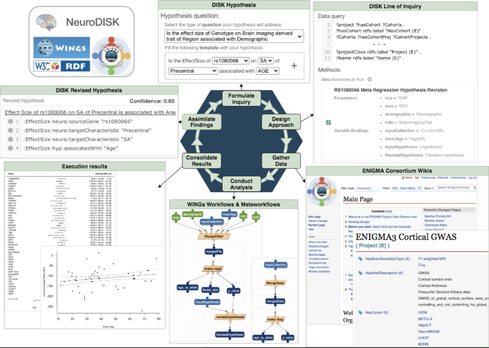

Hypothesis testing and rigorous data analysis are significant for scientific discoveries. In our data-driven world, the generation of scientific data is continuous, however, the designed hypothesis is only tested once against its own cohort and may yield contradictory results when evaluated on different cohorts, and this is not uncommon in empirical sciences such as neuro sciences. To study the continuously available scientific data to its full potential, automated hypothesis testing is necessary. One of the challenges for automated hypothesis re-evaluation is the lack of an integrated system that can monitor and update the hypothesis testing with new data becoming available.
DISK (Automated DIscovery of Scientific Knowledge) is a novel framework to test and revise hypotheses based on automatic analysis of scientific data repositories that grow over time. Neuro-DISK extends DISK to the scope of neuroscience, by connecting to external knowledge bases, including available projects within ENIGMA (Enhancing Neuro Imaging Genetics through Meta-Analysis) consortium, a large international collaboration for neuro-imaging and genetics aiming to understand brain structure and function.
NeuroDISK is designed to test and revise hypotheses via automatic analysis of dynamic scientific data in neuroscience. In NeuroDISK, the user defines the hypothesis of interest through the DISK GUI, the hypothesis triggers a Lines of Inquiry (LOI) to search for appropriate data from the ENIGMA-ODS platform, the LOI workflows are then executed via WINGS, a semantic workflow system in which the steps and configuration of data processing by software components are specified. The execution results and the corresponding provenance trace are stored in a Linked Data repository and are explored by the associated meta-workflows included in the LOI, and the original hypothesis is revised, if necessary.